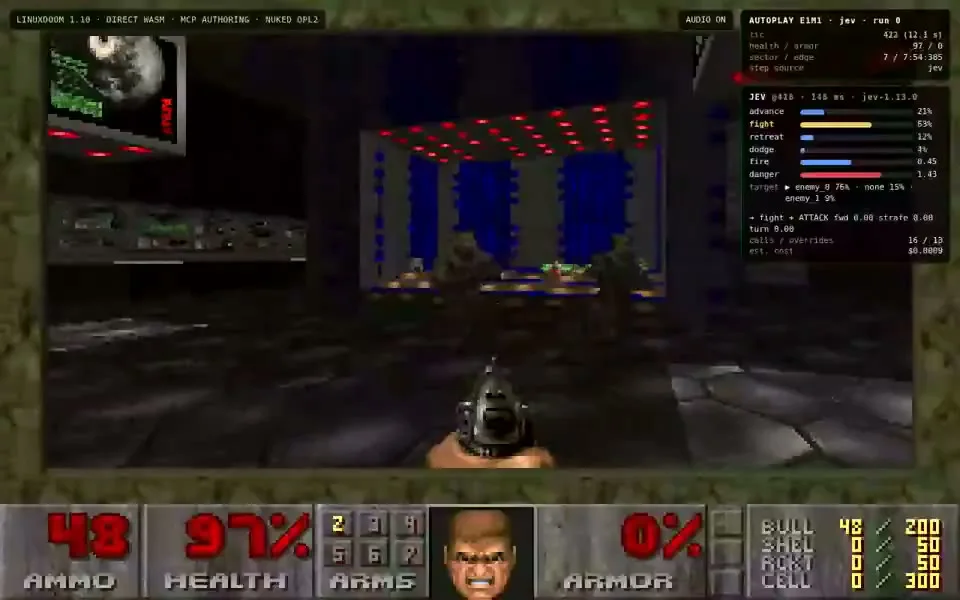
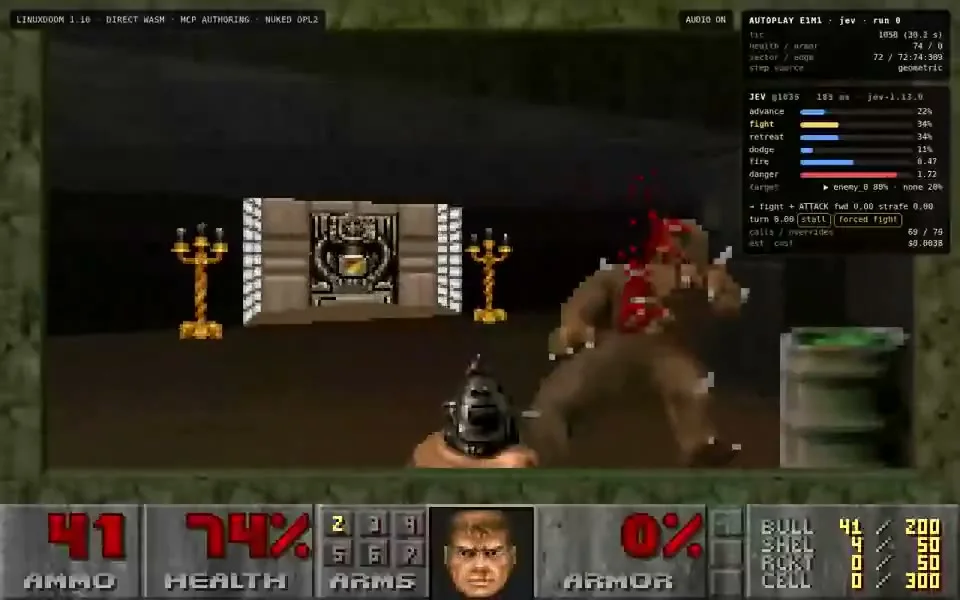

このUIがしていること
状態から選択、移動、戦闘、新しい状態という連続ループが画面上で一周ずつ見える。判断の内訳を常にオーバーレイで出しているので、プレイヤーは「なぜその動きか」を追える。
- 行動の確率がバーで並び、最有力の行動が視覚的に強調される。
- step source が「jev」と「geometric」で切り替わり、判断の出どころが分かる。2枚目には stall や forced fight のタグが見え、Jev以外の手続きが手を決める場合があることが読み取れる。
- calls / overrides の欄は、コードがJevの選択を上書きした回数の把握に使える（1枚目は 16 / 13 と読める）。
キャプチャ
{kind=link}

（原寸の画像を開く）{kind=link}

（原寸の画像を開く）見る箇所画面右上の「AUTOPLAY」パネルと「JEV」パネル。行動ごとの確率、標的、step source、calls / overrides の欄
入力から画面の変化まで
-
判断への入力
ゲームの現在状態（体力・弾薬・敵の位置・通路の端など）。作者は既存のWeb版Doom移植にMCPとボットを組み込んだものを再利用したと説明している。
-
Jevの判断
行動（advance / fight / retreat / dodge）の確率、標的（例: enemy_0 76% / none 15% / enemy_1 9%）、fire と danger の数値を返す。推論は146ms、jev-1.13.0と表示される。
-
結果がUIをどう変えるか
選ばれた行動が前進・射撃・旋回などの入力に変換される（例: fight → ATTACK）。パネルには step source、calls / overrides、推定費用が並ぶ。
- 判断型の見立て
- Choice / Score推定
- 行動（advance / fight / retreat / dodge）と標的の確率分布は選択、fire と danger の数値は確率でない値として表示されているため、そう見立てた。質問型は画面に明記されていない。
Jevとの適合
行動空間が小さく、状態が毎フレーム更新され、失敗の代償が低いため、低遅延の選択に向く。一方でコードによる上書きが多いという画面上の手がかりがあり、「Jevだけで戦っている」と読むのは不正確。
確認範囲と未確認事項
作者の投稿に添付された2本のゲームプレイ動画（E1M1・E1M2、難易度HMP）から静止画を確認。リポジトリは作者が示すが未確認。費用と反復回数は作者の自己申告で、クリア成否は掲載フレームからは確認できない。
- 確認済み動画から得た2枚の静止画に見える確率・標的・step source・calls / overrides・推定費用、および投稿文の説明
- 未検証クリアの成否、反復実験の回数と費用（「数百回・約1億トークン・5ドル未満」は作者の自己申告）、リポジトリの中身、上書きの条件
- 推定扱いcalls / overrides の意味。欄名からの読み取り
- 引用X投稿は2026-09-20（UTC）。動画から必要な範囲の静止画を切り出して引用。権利は作者に帰属する